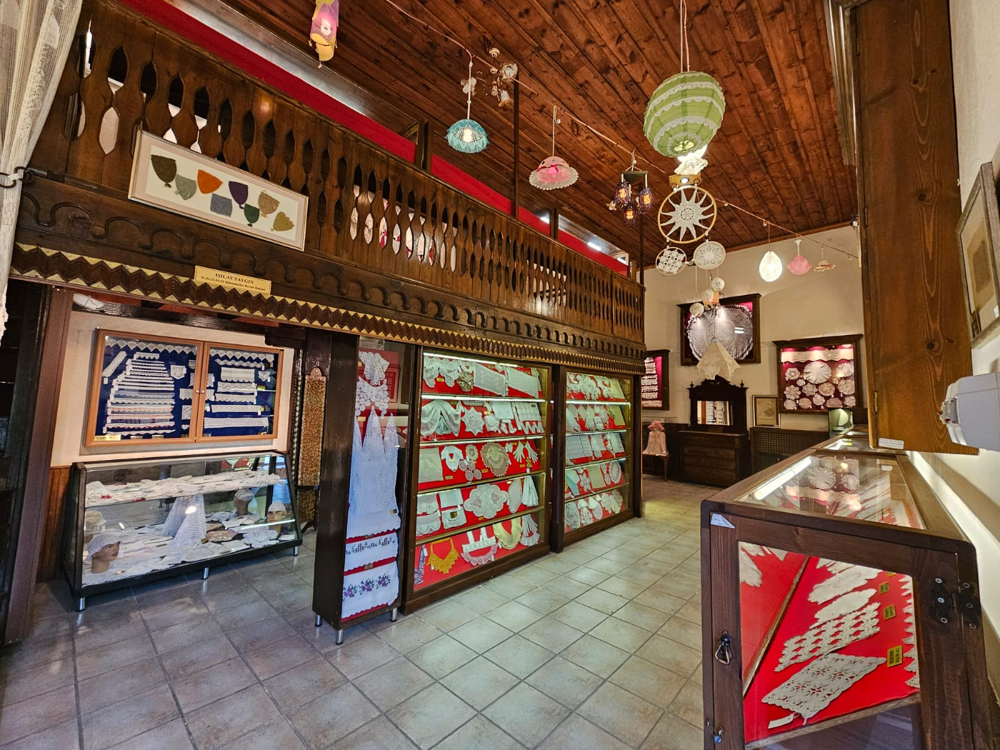
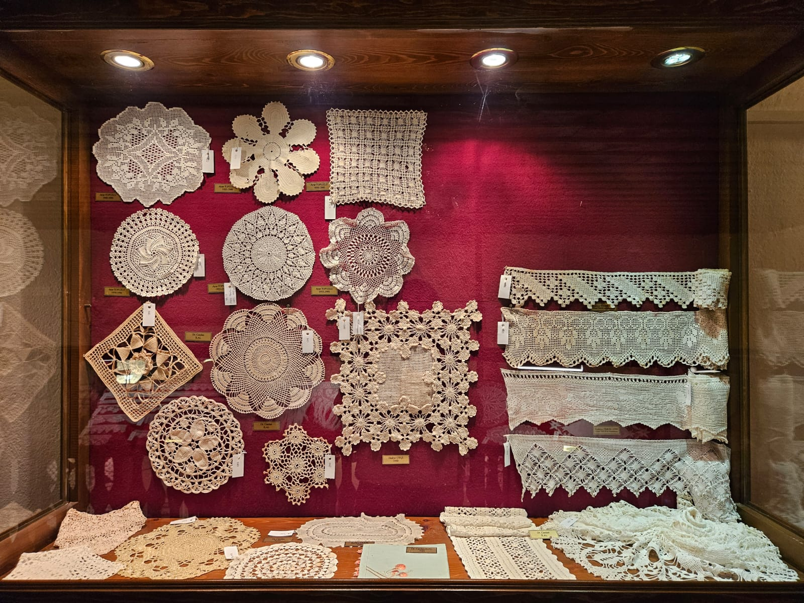
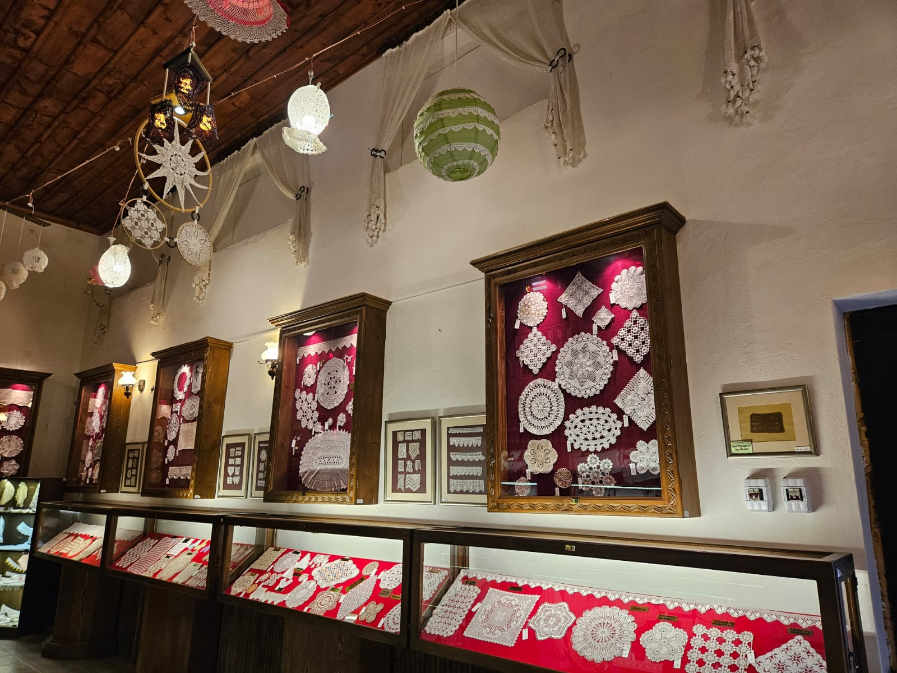

Dantel Müzesi
Müze, 23 Ağustos 2009'da Şapka İnkilâbı kutlamaları çerçevesinde açılmıştır. Türkiye'de öne çıkan müzelerden biri olan Kastamonu Dantel Müzesi, ülkede bu alanda öncü ve tek müze olma özelliği taşır.
Müze, Ankara Gazi Üniversitesi Öğretim Üyesi Yrd. Doç. Dr. Tomris YALÇINKAYA tarafından bağışlanan dantel koleksiyonu ile öne çıkar. Kastamonu'nun zengin kültürel mirasını yansıtan bu müze, ziyaretçilere geleneksel Türk dantel sanatının eşsiz örneklerini sunma fırsatı sağlar. Sergilenen dantel eserler, sanatın zarafetini ve inceliğini yansıtarak, ziyaretçilere benzersiz bir deneyim sunar. Kastamonu Dantel Müzesi, zengin Türk el sanatları geleneğine olan saygısını ve bu değerli mirası gelecek nesillere aktarma misyonunu başarıyla sürdürmektedir
  